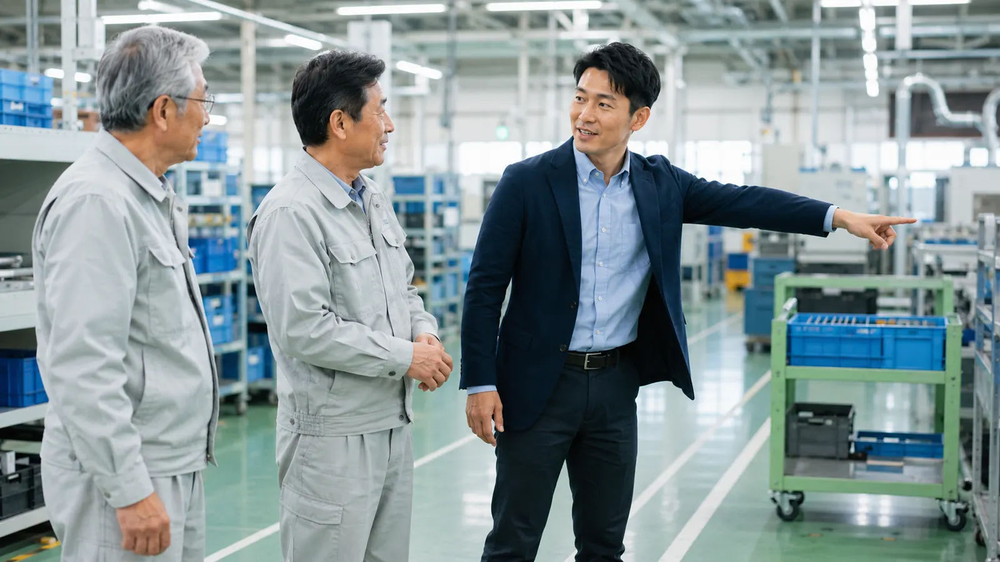

この記事の要点
- 北海道の製造業の労災の約半数が食料品製造業：令和7年（確定値）の休業4日以上の死傷者は、製造業1,109人のうち食料品製造業が545人でした。
- 多いのは転倒：各地の労働基準監督署の食料品製造業向けリーフレットでは、事故の型として転倒が最も多いと紹介されています。
- 床・冷蔵庫・運搬を場所ごとに見直す：水や油の除去、すべりにくい靴、冷凍庫の霜取り、箱の重さと置き場所の高さ、作業台の高さを確認します。
- 年末と冬に備える：繁忙期の作業量の増加や、出入口・駐車場の雪や凍結による転倒にも、早めに手を打っておきます。
この記事が役立つ方
- 水産加工、菓子・パン、惣菜、乳製品、農産物の加工などの食品工場で、安全衛生を担当している方
- 工場で転倒や腰痛による休業が続き、どこから手をつければよいか迷っている工場長・現場責任者の方
- パートや高年齢の従業員が多く、少ない手間で続けられる対策を探している経営者・総務の方
食品工場では、どんな労働災害が多いのですか？
北海道労働局の「令和7年における労働災害発生状況（確定値）」によると、令和7年の北海道の休業4日以上の死傷者（死亡を含む）は全産業で7,779人、製造業で1,109人でした。このうち食料品製造業は545人（前年580人）で、全産業の7.0％、製造業の約半数にあたります。同じ資料で製造業全体の事故の型を見ると、転倒が324人（うち滑りによるもの157人）、動作の反動・無理な動作が112人（うち腰痛29人）でした。令和8年に入ってからも、6月末時点の速報値で食料品製造業は229人と、前年同期（224人）をやや上回っています。
食料品製造業に絞った事故の型は、各地の労働基準監督署のリーフレットで紹介されています。盛岡労働基準監督署の資料（平成29年〜令和3年の集計）では転倒が最も多く全体の約3割を占め、次いで機械へのはさまれ・巻き込まれが多いこと、50代・60代で多く発生していることが示されています。広島北労働基準監督署の資料（令和7年11月）でも、管内の食料品製造業では転倒が圧倒的に多く、続いて機械へのはさまれ・巻き込まれ、動作の反動・無理な動作（いわゆる腰痛）とされ、1月・2月に積雪や凍結した床面での転倒が多発したことにも触れています。
食品工場は、洗浄や解凍で床がぬれやすい、油や粉が床に落ちやすい、冷蔵・冷凍庫での作業がある、原材料や製品の箱を繰り返し運ぶ、ライン作業で長く立ち続けるなど、転倒と腰痛の要因が重なりやすい職場です。年末にかけて生産量が増える工場では、慣れていない応援要員や短期の従業員が増えることもあり、今の時期に作業場所を見直しておく意味があります。
ぬれた床や通路の転倒は、どこを見直せばよいですか？
盛岡労働基準監督署のリーフレットでは、通路や出入口に不要な物を放置していないか、床の水たまり・油・粉類をその都度取り除いているか、通路や階段の照度は十分か、転倒しやすい場所をマップなどで「見える化」しているか、作業に合った靴（サイズや靴底の減り具合）を選んでいるかを確認するよう示しています。横須賀労働基準監督署の資料でも、通路の幅や段差、4S活動（整理・整頓・清掃・清潔）と危険の見える化がチェック項目に挙げられています。
場所ごとに見直す例をまとめると、次のとおりです（工場の作業内容に合わせて調整する「例」です）。
| 場所・作業 | 起こりやすいこと | 見直しの例 |
|---|---|---|
| 下処理・洗浄エリア | 水たまりや油、食材のくずで滑る。ホースや排水溝のふたにつまずく | こぼれたらその都度取り除くルールと道具の置き場所を決める。排水や水切りの方法、ホースの片付け場所を決める |
| 冷蔵・冷凍庫 | 床の霜や凍結で滑る。寒さで体がこわばる。棚の低い位置・高い位置の出し入れで前かがみや背伸びが続く | 霜取りと庫内の整理整頓を定期的に行う。在庫や置き方を見直し、よく使う物を腰の高さ付近に置く。防寒着と庫内作業の時間・休憩を決める |
| 製造・包装ライン | 長時間の立ち作業。作業台が低く前かがみが続く。床に落ちた包材で滑る | 作業台の高さを作業者に合わせる（踏み台や台の追加など）。作業の交代や休憩で姿勢を変える機会をつくる。足元の包材をこまめに片付ける |
| 原材料の受入れ・出荷 | 重い箱や袋を床から持ち上げる。高く積んだ台車で前が見えない | 箱や袋の重さを確認し、小分け・台車・リフターを使う。床に直接置かず台の上に置く。台車に積む高さの目安を表示する |
| 出入口・駐車場（冬） | 雪や凍結、持ち込まれた雪どけ水で滑る | 屋外通路の除雪や融雪剤の散布、出入口のマット設置、靴の雪を落とす場所を決める |
靴は「すべりにくい」と表示されたものでも、床の状態（水、油、粉、凍結）によって合う・合わないがあります。実際の作業場所で試してから選ぶ、靴底がすり減ったら交換する時期を決めておく、といった運用まで決めておくと続けやすくなります。北海道の冬の転倒対策は北海道の冬の転倒災害を防ぐ記事でも紹介しています。
冷蔵庫・冷凍庫での作業は、何に気をつければよいですか？
厚生労働省のリスクアセスメント資料「リスクアセスメントのすすめ方（店舗におけるリスクアセスメントの実施のために）」では、食品加工・調理関係の例として、冷凍庫内の床面が凍りついて滑って転倒する危険が挙げられ、自動霜取り機の導入、冷凍庫内の在庫の削減、管理棚の設置、床面のすべり対策、庫内の整理整頓と霜取りの徹底といった対策が示されています。床面に対応した靴の着用を作業前の服装確認で徹底する例もあります。
また、厚生労働省の職場における腰痛予防対策指針では、寒冷が腰痛の環境要因の一つとされ、寒冷にさらされないよう衣服や暖房設備で保温することが示されています。庫内に長くとどまらないよう作業の段取りを決める、庫内から出たあとに体を温めて動かす時間をとる、といった工夫も考えられます。
箱の運搬や立ち作業の腰痛は、何を見直せばよいですか？
腰痛予防対策指針では、重量物を常時人力のみで取り扱う場合、満18歳以上の男性は体重のおおむね40％以下となるよう努め、女性は男性が取り扱える重量の60％位までとすることとしています。これを超える重さの物は2人以上で扱う、台車やリフターなどの機器を使う、荷姿を小さくするといった対策が求められます。床から持ち上げる動作が多い場合は、置き場所を腰の高さ付近にするだけでも前かがみの回数を減らせます。
- 原材料や製品の箱・袋の重さを把握し、重いものに表示しているか
- 台車やリフター、ローラーコンベヤなど、持ち上げずに運べる手段が使える場所にあるか
- 床に直接置かず、腰の高さ付近の台や棚に置けるようにしているか
- 作業台の高さが作業者の体格に合っているか（低い場合は台を足す、高い場合は踏み台を使う）
- 立ち作業が長く続く工程で、作業の交代や短い休憩、姿勢を変える機会があるか
- 床が硬い場所で、クッション性のある靴やマットを使えるか（衛生面のルールと両立できる範囲で）
- 作業の手順や姿勢、時間を定めた作業標準があり、新しい人や応援の人にも伝わっているか
岡山労働局・倉敷労働基準監督署の資料（令和6年7月）でも、腰痛対策として、作業機器や作業台を体型に合わせること、適宜休憩を設けて姿勢を変えること、作業標準をつくること、腰痛予防の健康診断を行うことが挙げられています。腰痛予防対策指針では、腰部に著しい負担のかかる作業に常時従事する労働者に対し、配置する際とその後6か月以内ごとに1回、医師による腰痛の健康診断を行うことも示されています。製造業全体の重量物・立ち作業の対策は製造業の立ち作業・重量物の腰痛予防の記事で詳しく紹介しています。
社内では、どんな順番で進めればよいですか？
一度にすべてを変えるのは難しいため、次のような順番で進める方法があります（進め方の「例」です）。
- 直近の記録を集める：過去の休業災害やヒヤリハット、腰痛の訴えを、場所・作業・時間帯ごとに整理します。
- 現場を一緒に歩く：工場長と現場のリーダー、可能であれば従業員の代表で作業場所を歩き、滑りやすい場所や前かがみ・重量物の作業を洗い出します。
- すぐできることから決める：清掃のルール、通路に物を置かない決まり、置き場所の高さ、台車の使い方など、費用のかからない対策から始めます。
- 設備や靴は優先順位をつける：床材、作業台、リフターなどは、危険の大きさと費用を比べて計画的に導入します。
- 全員に短く伝える：朝礼や交代時に、転びやすい場所と持ち方・運び方、体操を短時間で共有します。新人や応援要員には配置の初日に伝えます。
- 数か月後に確かめる：ヒヤリハットの件数や従業員の声で、対策が守られているか、新たな危険がないかを確認します。
高年齢の従業員が多い工場では、高年齢従業員の転倒予防の記事で紹介している体力チェックを組み合わせると、本人が自分の転びやすさに気づくきっかけになります。
外部の専門家に依頼すると、何をしてもらえるか
プライズネス健康経営サポートでは、理学療法士が工場を訪問し、下処理・ライン・包装・出荷などの作業の姿勢や動き、作業台の高さ、運搬の方法、転びやすい場所を確認して、見直しの優先順位を整理します。従業員向けに、腰に負担の少ない持ち方や運び方、転倒予防の体操を実技で学ぶセミナーを行うこともできます。シフト制の工場では、交代の時間に合わせた短い時間での実施もご相談いただけます。内容はサービス内容、費用の目安は料金プランでご確認いただけます（例：単発セミナー55,000円〜、職場訪問評価132,000円〜、定期サポート月額88,000円〜）。
本サービスは医療行為ではなく予防のための支援です。特定の成果をお約束するものではありません。腰の痛みやしびれがある方には、医療機関への相談をおすすめしています。
食品工場の転倒・腰痛対策を、一緒に見直しませんか
「床がぬれる工程が多く、どこから手をつければよいか分からない」「年末の繁忙期の前に腰痛対策を見直したい」という段階からご相談いただけます。まずは職場の腰痛リスクを3分でセルフチェックし、その結果をもとに無料相談をご利用ください。
よくある質問
食品工場では、どんな労働災害が多いのですか？
各地の労働基準監督署が食料品製造業向けに作成したリーフレットでは、事故の型として転倒が最も多いと紹介されています。例えば盛岡労働基準監督署の資料（平成29年〜令和3年の集計）では転倒が全体の約3割を占め、次いで機械へのはさまれ・巻き込まれが多いとされています。広島北労働基準監督署の資料（令和7年11月）でも、管内の食料品製造業では転倒が圧倒的に多く、続いてはさまれ・巻き込まれ、動作の反動・無理な動作（いわゆる腰痛）と紹介されています。
ぬれた床での転倒は、何から見直せばよいですか？
まず、水や油、粉が床に残りやすい場所を、現場の従業員と一緒に洗い出します。そのうえで、こぼれたらその都度取り除くルール、排水や水切りの方法、通路に物を置かない決まり、転びやすい場所の表示（見える化）、作業場所に合ったすべりにくい靴の選定と、靴底のすり減りの定期確認を決めておきます。床材の変更などの設備面の対策は、費用と効果を比べながら優先順位をつけて進めます。
冷蔵庫・冷凍庫での作業で、気をつけることはありますか？
厚生労働省のリスクアセスメント資料では、冷凍庫内の床面が凍りついて滑って転倒する例が挙げられ、霜取りや庫内の整理整頓、在庫の削減、棚の設置といった対策が示されています。また、腰痛予防対策指針では寒冷が腰痛の環境要因の一つとされており、保温できる服装や、庫内での作業時間と休憩の組み方を決めておくことも大切です。
原材料の箱や袋を運ぶ作業の腰痛は、どう防げばよいですか？
腰痛予防対策指針では、重量物を常時人力のみで取り扱う場合、満18歳以上の男性は体重のおおむね40％以下となるよう努め、女性は男性が取り扱える重量の60％位までとすることとしています。箱や袋の重さを確認し、重いものは小分けや台車・リフターの使用、2人での作業に切り替えます。床に直接置かず腰の高さ付近の台に置く、作業台の高さを作業者に合わせる、ひねりや前かがみが続く作業を連続させない、といった見直しも有効です。
プライズネスに依頼すると、何をしてもらえますか？
理学療法士が工場を訪問し、下処理・ライン・包装・出荷などの作業の姿勢や動き、作業台の高さ、運搬の方法、転びやすい場所を確認して、見直しの優先順位を整理します。従業員向けに、腰に負担の少ない持ち方や運び方、転倒予防の体操を実技で学ぶセミナーを行うこともできます。費用の目安は単発セミナー55,000円〜、職場訪問評価132,000円〜、定期サポート月額88,000円〜です。医療行為ではない予防のための支援で、特定の成果をお約束するものではありません。痛みやしびれがある方には医療機関への相談をおすすめしています。
関連する記事
この記事は、公的機関などの公開資料をもとにAIを活用して作成しています。表やチェック項目、進め方は説明用の例で、工場の設備や作業内容、従業員の状態によって適した方法は異なります。統計や資料は更新されることがあるため、ご判断の際は出典の最新情報をご確認ください。痛みやしびれなどの症状がある場合は、医療機関にご相談ください。
出典・参考：
北海道労働局「令和7年における労働災害発生状況」（確定値、PDF）
北海道労働局「北海道における労働災害発生状況」（令和8年6月末現在、速報値、PDF）
岩手労働局 盛岡労働基準監督署「食料品製造業の労働災害を予防しましょう！」（PDF）
広島北労働基準監督署 食料品製造業の労働災害防止に関する資料（令和7年11月、PDF）
横須賀労働基準監督署「食料品製造業の労働災害が増加！」（PDF）
岡山労働局・倉敷労働基準監督署 転倒・腰痛災害の防止に関する資料（令和6年7月、PDF）
厚生労働省「リスクアセスメントのすすめ方（店舗におけるリスクアセスメントの実施のために）」（PDF）
厚生労働省「職場における腰痛予防対策指針」（解説・作業態様別の対策を含む、PDF）
（2026年11月27日確認）